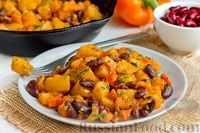
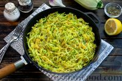

Картошка, тушенная с болгарским перцем и фасолью в томатном соусе!

Картошка, тушенная с болгарским перцем, фасолью, морковью и луком, - вариант сытного блюда на каждый день. Фасоль в данном случае заменяет мясо, делая рагу сытным и питательным. Чтобы сократить время приготовления, возьмём консервированную фасоль. Блюдо хоть и простое, но в полной мере наполнено ароматами и имеет выразительный вкус за счёт добавления томатной пасты.
Цена: 5.49$-17,28 BYN
Рисовые котлеты с луком и морковью

Великолепное постное блюдо из отварного риса и овощей, которое готовится очень просто и относительно недолго. Все ингредиенты – бюджетные и всегда имеются под рукой. Такие котлетки несут в себе «тройную пользу» – питательность, скорость приготовления и доступность. Обязательно приготовьте!
Цена: 4.00$-12,59 BYN
Стейк для вегетарианцев

Совершенно случайно, на просторах одной популярной торговой площадки, я обнаружил товар, который назывался "стейк для вегетарианцев". Честно скажу, что меня такой “стейк” очень удивил: внешне он действительно напоминал стейк из мраморной говядины. Как кулинарный блогер, я не смог пройти мимо такого любопытного продукта и решил попробовать его приготовить на гриле. Что из этого получилось – смотрите в рецепте.
Цена: 7.20$- 22,66 BYN
Кабачковая "лапша" с морковью и чесноком
 Жареная лапша из кабачков – быстрое, лёгкое и оригинальное блюдо, которое идеально подойдёт для вегетарианской и постной кухни или низкокалорийной диеты. Кабачковая лапша получается ароматной, чеснок и базилик добавляют аппетитные пряные нотки, а морковь и сок лимона – яркий вкус. Нежные кабачковые полоски по внешнему виду напоминают спагетти – это необычно и вкусно.
Цена: 6.00$-19,62BYN